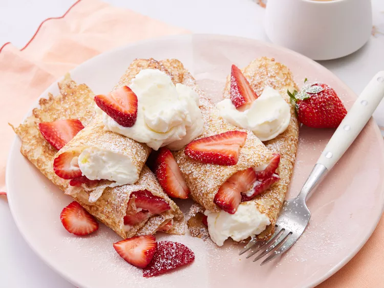

Home
Creamy Strawberry Crepes

Description
These strawberry crepes are delicious and have a rich and creamy filling with lots of sliced fresh strawberries.
This recipe has been a family favorite for over 30 years! Perfect for special occasions.
Ingredients
- Flour
- Milk
- Water
- Egg
- melted Butter
- Salt
- Sugar
- Cream Cheese
- Lemon juice
- Lemon zest
- Vanilla extract
- Heavy cream
- Sliced strawberries
Steps
- Gather all ingredients.
- To make the crepe batter: Place flour, milk, water, eggs, melted butter, and salt into a blender. Blend
until smooth and set aside.
- To make the filling: Beat confectioners' sugar, cream cheese, lemon juice, lemon zest, and vanilla with an
electric mixer in a large bowl until smooth.
- Gently fold in whipped cream.
- Heat a lightly oiled griddle or nonstick skillet over medium heat. Pour or scoop batter onto the griddle,
using approximately 2 tablespoons for each crepe.
- Tip and rotate the pan to spread batter as thinly as possible.
- Flip when batter is set and edges begin to brown. Continue cooking until bottom begins to brown. Stack
finished crepes on a plate; cover with a damp towel.
- Fill each crepe with 1/4 cup sliced strawberries and 1/3 cup cream cheese filling.
- Roll up and top with a dollop of cream cheese filling and more sliced strawberries.